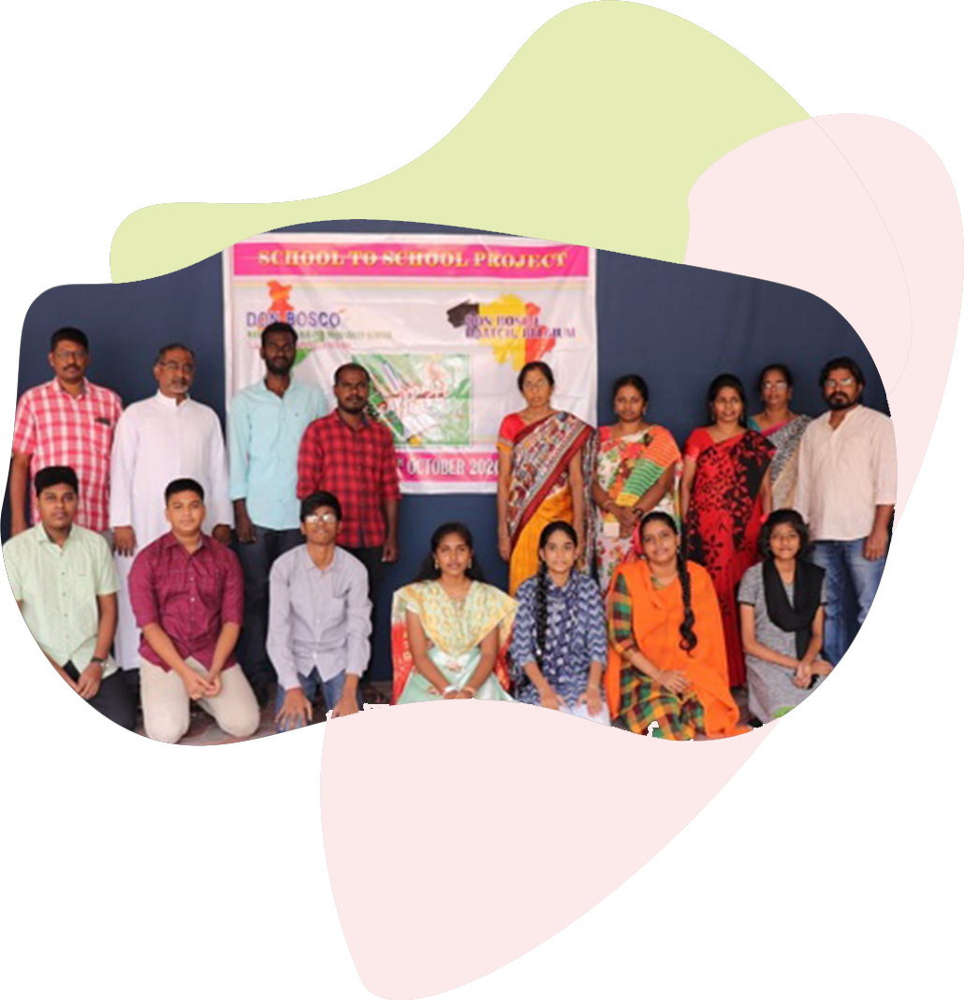
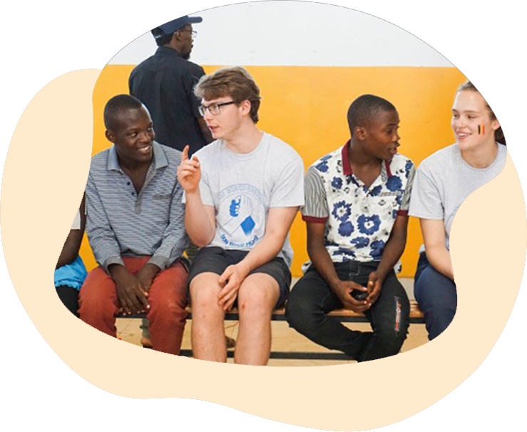

Saved by the Bell vindt elk jaar plaats in de week van de
Internationale Dag van de Leerkracht (5 oktober).
In 2025 vieren we dit op vrijdag 3 oktober met extra aandacht voor
kwaliteitsvol onderwijs voor alle kinderen en jongeren.

Welkom in deze toolbox
Deze toolkit helpt jouw school een succesvolle online samenwerking te
starten of te onderhouden met een partnerschool in Vlaanderen,
Wallonië of elders in de wereld.

Waarom samenwerken?
Wereldburgerschap: Leerlingen ontdekken mondiale thema’s en oefenen
vaardigheden om hieraan bij te dragen.
Professionele groei: Jij krijgt inspiratie door te kijken hoe
collega’s in andere landen lesgeven.
Impactvolle verbinding: Een eenvoudig belmoment versterkt de band
en stimuleert uitwisseling.
Verrijkend: Bekijk de VIDEO’S van leerkrachten die hun ervaringen
delen
“Help your pupils understand the big issues that shape our world and
equip them with the knowledge, skills and attitudes they need to
make a positive contribution.”
Samenwerking aangaan
Voor scholen zonder partnerschool
Goedkeuring: vraag toestemming aan directie of schoolteam.
Selectie van platform: test videoconferencing-tools
Partnerschool vinden:
Swap-Swap CHECKLIST (taaluitwisselingen met Franstalige/ Waalse
scholen, zie https://swap-swap.be/nl/voor-scholen/)
Leraars zonder Grenzen
VIA Don Bosco
Scholenbanden
Vrijwilligerswerk.be
Eerste belmoment voorbereiden:
Thema kiezen (bv. “Klimaat in mijn buurt”)
Draaiboek maken
Leerlingen trainen in etiquette en vragen stellen
Voor scholen met partnerschool
Ben ja al in contact met een school in België of verder?Dan kun je
direct:
Gebruik dei input om de volgende sessies te verbeteren
Contact onderhouden
Regelmaat:Plan vaste belmomenten ( maandelijks of per
kwartaal) en digitale projecten (blog,online tijdschrift ) om de
samenwerking gestructureerd en levendig te houden
Toolkit en tips
Taaltips van Swap-Swap: culturele aandachtspunten en handige
zinnen
Gids van scholenbanden: Best practices, draaiboeken en
voorbeeldactiviteiten
Voorbeeld:Veltem (B) ↔ Guatemala (2014) – thema “Goed
onderwijs voor alle kinderen”: presentaties uitgewisseld,
gezamenlijk project ontwikkeld en ervaringen gedeeld.
Saved by the Bell-belmoment
Thema:Goed onderwijs voor alle kinderen en jongeren
FormatKort, interactief video-event
Actie
Meld je school
plan je eerste belmoment
Deel foto's en verhalen in de online galerij
Aan de slag
Organiseer leuke momenten met je partnerschool aan de hand van
Heb je al een partnerschool? → Organiseer direct een belmoment
Bekijk vrijwilligersmogelijkheden als leerkracht in het buitenland: